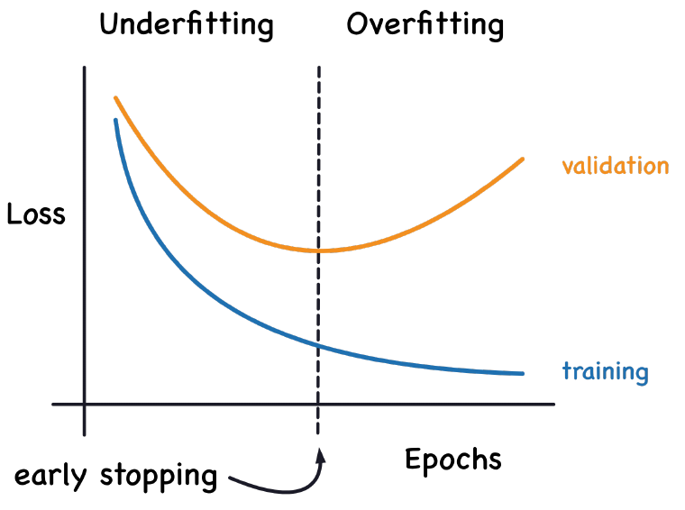

A correct training loop can still learn slowly, lose its gradient signal, or fit the training set while getting worse on new data. This reading connects activation scale, gradient flow, and generalization through worked examples and diagnostic experiments. We then turn to the interface between language and the network: which pieces of text become its inputs and prediction targets.
Use the worked examples to predict what a training run will do, then test the explanation. Try each exercise before opening its answer.
- Slides
- 183–208 of Feedforward Nets, plus 1–12 of Tokenization. Companion reading with additional examples and exercises.
- Session
- Thursday, Sept 24. About 90–115 minutes, including exercises.
- By the end
- Explain activation derivatives and residual paths; connect initialization with normalization; distinguish better training fit from better generalization; apply early stopping and dropout; diagnose a training run; compare token units and interpret token IDs, word pieces, whitespace, and numbers.
- Assumes
- Handout #5: analytical backprop and Handout #7: batching, execution modes, and training memory.
Find the reading for a slide topic
| Slides | Reading route |
|---|---|
| 183–188 | Activation functions |
| 189–193 | Gradient stability and residual connections |
| 194–195 | Weight initialization |
| 196–198 | Normalization |
| 199–205 | Validation, early stopping, and dropout |
| 206–208 | Tiny-data debugging and synthesis |
| Tokenization 1–12 | From text to tokens |
1Activation functions and their derivatives
Slides 183–188
| Function | Derivative | Training implication |
|---|---|---|
| Sigmoid $\sigma(z)$ | $\sigma(z)(1-\sigma(z))$ | In $(0,1)$; derivative at most $1/4$ and small in either tail. |
| $\tanh z$ | $1-\tanh^2 z$ | Output centered around zero, but still saturates in either tail. |
| ReLU $\max(0,z)$ | 1 for $z>0$, 0 for $z<0$ | No positive-side saturation; negative inputs block the local gradient. |
| Leaky ReLU $\max(\alpha z,z)$, $0<\alpha<1$ | $\alpha$ for $z<0$, 1 for $z>0$ | Retains a nonzero negative-side derivative. |
At zero, nonsmooth functions need a chosen derivative convention. Saturation is gradual: sigmoid derivatives at finite inputs are mathematically positive, although finite precision can round them to zero. A “dead ReLU” stays inactive across the relevant training inputs, not merely on one example. Leaky ReLU avoids an exactly zero negative slope but cannot guarantee learning.
Monotonicity is not required for a valid activation. GELU and SiLU/Swish provide smooth, nonmonotone alternatives. For the feedforward experiments in these slides, ReLU is a useful baseline; compare alternatives with the same data split and training budget. PReLU learns its negative-side slope rather than fixing it. Softplus is a smooth approximation to ReLU; SwiGLU is a gated construction using two projections, rather than simply a scalar activation replacement.
For an elementwise activation $h=f(z)$, backward computes $g_z=g_h\odot f\prime(z)$. At $z=5$, sigmoid contributes about 0.00665; at $z=3$, tanh contributes about 0.00987. These are small, not mathematically zero. Zero-centered outputs can improve optimization geometry, but tanh's mean is not guaranteed to be zero for an arbitrary input distribution.
Does sigmoid's derivative being at most $1/4$ prove that a whole network's gradients must shrink by a factor of four at every layer?
Answer
A proposed activation is $f(z)=\max(0.2z,2z)$. Write its two branches and derivatives away from zero. With incoming gradient 3, what gradient reaches $z=-2$? What about $z=2$? Does this fix every vanishing/exploding-gradient problem? Compare it with replacing ReLU by $f(z)=2z$.
Work it out, then reveal the answer
For $z<0$, $0.2z$ is the larger value, so $f(z)=0.2z$ and $f\prime(z)=0.2$. For $z>0$, $f(z)=2z$ and $f\prime(z)=2$. The backward signals are therefore $0.6$ and 6. Unlike ReLU, this function passes a nonzero local gradient on the negative branch; it is twice a leaky ReLU with negative slope 0.1.
The unequal slopes preserve nonlinearity, but their scale matters. Along ten active positive branches with identity weight maps, the activation derivatives alone contribute $2^{10}=1024$. Negative branches can still attenuate signals, and weight Jacobians also enter the product. Nonzero local derivatives do not guarantee well-scaled gradients.
Using $2z$ everywhere gives a nonzero derivative but removes the nonlinearity. A stack of affine layers with this activation is still one affine map. At zero, the proposed piecewise function requires a derivative convention; the calculations above avoid that boundary.
A sigmoid hidden unit receives preactivation $z=10$ after initialization. Estimate its derivative and compare it with the derivative at $z=0$. If the upstream gradient is 1, how much signal reaches the preactivation?
Work it out, then reveal the answer
$\sigma\prime(10)=\sigma(10)(1-\sigma(10))\approx4.54\times10^{-5}$, compared with $1/4$ at zero. The incoming value 1 becomes about $4.54\times10^{-5}$. Large weights can cause this saturation, depending on the inputs and cancellations; positive weights alone do not guarantee large preactivations on every example.
2Vanishing gradients, exploding gradients, and residuals
Slides 189–193
Handout #5 derived $g_i=A_i^\top g_{i+1}$. Repeating that rule multiplies many Jacobians. For a scalar illustration, twenty factors of $0.5$ give about $9.54\times10^{-7}$; twenty factors of 2 give $1{,}048{,}576$. In multiple dimensions, amplification depends on directions and singular values, not just whether individual matrix entries exceed 1.
$$\|g_i\|\leq\left(\prod_{j=i}^{L-1}\|A_j\|\right)\|g_L\|.$$This is an upper bound, not a prediction that every direction grows at that rate. Monitor activation and gradient norms at several layers. Nonfinite gradients, nearly zero gradients, and large but finite gradients require different diagnoses. Gradient clipping limits the gradient norm before the optimizer uses it; it does not directly bound every optimizer’s parameter update, and it cannot repair a NaN already produced in the forward pass.
Global norm clipping with threshold $c>0$ uses $g_{\rm clip}=\min(1,c/\|g\|_2)g$ for nonzero $g$, leaving a zero vector unchanged. Take $c=1$ and compare $g=(3,4)$ with $g=(3\times10^{-8},4\times10^{-8})$.
- Compute the clipped vectors and the update norms for plain SGD with learning rate 0.1, no momentum, and no weight decay.
- Does clipping restore information lost through a zero activation derivative?
- For accumulated microbatches, should you clip each contribution separately or clip after forming the intended full gradient?
Work it out, then reveal the answer
The first norm is 5, so the clipped vector is $(0.6,0.8)$ and the SGD update norm is 0.1. The second norm is $5\times10^{-8}$, already below the threshold; it stays unchanged and gives an update norm of $5\times10^{-9}$. Clipping caps magnitude; it does not scale small gradients up or repair NaNs. A signal multiplied by a zero derivative remains zero.
To clip the gradient of the accumulated objective, finish its correctly weighted backward
contributions, then clip once before optimizer.step(). Clipping is nonlinear: for
scalar contributions 2 and $-1$ at threshold 1, clipping separately and adding gives $1-1=0$;
adding first and clipping gives 1. Thus clipping each microbatch implements a different update.
The SGD update calculation uses the stated optimizer assumptions. With momentum or adaptive optimizer state, bounding the current gradient norm does not directly bound the final parameter update by learning rate times threshold.
A residual block computes $h_{i+1}=h_i+F(h_i)$, so its backward rule is
$$g_i=(I+J_F(h_i))^\top g_{i+1}=g_{i+1}+J_F(h_i)^\top g_{i+1}.$$The identity path supplies a direct gradient contribution alongside the learned branch. Shapes must agree for addition, or a projection is needed. Residuals improve gradient flow in many networks; they do not guarantee that gradients cannot vanish or explode.
Consider a block with two linear layers and a final activation (the example on slide 193): out = linear2(relu(linear1(x))); out = relu(out + x).
The skip connection is the addition of x, not the assignment identity = x
by itself. Because that example applies ReLU after the sum, its full Jacobian is
$D_{\mathrm{out}}(I+J_F)$, where $D_{\mathrm{out}}$ is the final ReLU mask. The identity contribution
can still be blocked by that mask. In a plain $x+F(x)$ block, $F(x)=0$ passes $x$ through;
the branch learns a correction to the identity.
This connects three complementary controls: residuals add a direct path, initialization sets starting signal scales, and normalization adjusts hidden scales during computation. None substitutes for checking the actual forward and backward values.
For the scalar residual $y=x+F(x)$, what happens when $F'(x)=0$? What about $F'(x)=-1$?
Answer
Let $z_1=W_1x$, $h_1=\operatorname{ReLU}(z_1)$, $z_2=W_2h_1$, $h_3=h_1+\operatorname{ReLU}(z_2)$, and $J=\tfrac12\|h_3-y\|^2$. Derive $\nabla_xJ$ using column gradients. Define $D_i=\operatorname{diag}(\mathbf1[z_i>0])$ and assume no preactivation is zero.
Work it out, then reveal the answer
Start with $g_3=h_3-y$. The learned branch contributes $W_2^\top D_2g_3$ to $h_1$, and the identity path contributes $g_3$. Thus $g_1=g_3+W_2^\top D_2g_3$ and
$$\nabla_xJ=W_1^\top D_1(I+W_2^\top D_2)(h_3-y).$$The direct term avoids multiplication by $W_2^\top D_2$, but it still passes through $W_1^\top D_1$. Residuals do not remove every possible source of attenuation. The sample solution uses row sensitivities; these transposes implement this handout’s column convention.
3Initialization: break symmetry without losing scale
Slides 194–195
If hidden units start with identical incoming weights and biases and identical outgoing connections, they receive identical gradients and remain interchangeable. Random weights break this symmetry. Zero biases can be fine when the weights already distinguish the units; the warning is about initializing the whole network symmetrically.
The noise scale matters too: large weights can saturate activations or amplify gradients, while very small weights can weaken signals. To see why fan-in matters, let $z=\sum_{j=1}^n w_jx_j$, with independent, zero-mean weights of variance $s^2$, independent of the inputs. Under the usual independence assumptions, $\mathbb E[z^2]=n s^2\mathbb E[x_j^2]$. Unit-variance weights can therefore enlarge signals as width grows; the scale should depend on the number of summed inputs.
Xavier/Glorot's gain-1 choice uses $\operatorname{Var}(w)=2/(n_{\rm in}+n_{\rm out})$ to balance forward and backward scales. Kaiming's ReLU fan-in choice uses $2/n_{\rm in}$: for a symmetric preactivation, ReLU keeps half of its second moment. This is a second-moment argument, not a claim that ReLU outputs have mean zero or exactly preserve centered variance. For leaky ReLU slope $\alpha$, the analogous choice is $2/((1+\alpha^2)n_{\rm in})$.
import torch
from torch import nn
layer = nn.Linear(100, 64) # weight shape: (fan_out, fan_in)
nn.init.kaiming_normal_(layer.weight, mode="fan_in", nonlinearity="relu")
nn.init.zeros_(layer.bias)
assert layer.weight.shape == (64, 100)
# Suitable for a layer followed by ReLU; choose separately for the output layer.These are starting-scale heuristics under simplified assumptions, not guarantees throughout training. See PyTorch's initialization reference for gains and weight-layout conventions.
Two tanh units have identical incoming weights and biases, and the same scalar output weight. Will ordinary deterministic gradient descent make them learn different features?
Answer
4Normalization: choose what to center
Slides 196–198
For a numerical input feature, standardization uses $(x-\mu)/\sqrt{v+\epsilon}$, where $\mu$ and $v$ are estimated from the training split and reused on validation and test inputs. Do not standardize discrete token IDs: their integer values are labels, not magnitudes.
Centering can change which update directions are available: for a single affine unit and one example, $\nabla_w\ell=\delta x$. If every coordinate of $x$ is positive, the weight-gradient coordinates share a sign. Centering can improve this geometry; gradients summed across examples need not share a sign, and centering is not a universal convergence guarantee.
Normalization inside a network is an operation with its own axes. For $X$ shaped $(B,T,d)$,
LayerNorm(d) computes mean and variance over the final $d$ coordinates separately for
each token. Batch normalization uses statistics across the batch and relevant spatial axes and
normally tracks running statistics for evaluation. These choices are not interchangeable. For $(B,T,d)$, LayerNorm has $BT$ separate groups
of $d$ features and typically $2d$ learned scale/shift parameters. For a $(B,d)$ batch,
BatchNorm has $d$ groups of $B$ examples; for sequence input in PyTorch's $(B,d,T)$ layout,
BatchNorm1d(d) aggregates over $B$ and $T$. Padding then needs care because those
statistics can include padded positions. LayerNorm uses the current token's statistics in both
training and evaluation; BatchNorm normally switches to running estimates for evaluation.
4.1 What information does each normalization remove?
Take two examples with two features each, $X=\begin{bmatrix}1&3\\101&103\end{bmatrix}$. Ignore $\epsilon$ for this calculation and set $\gamma=1,\beta=0$. LayerNorm groups the two features within each row; BatchNorm groups the two examples within each column. Use population variance (divide by the number of values in the group).
| Operation | Group means | Group standard deviations | Output |
|---|---|---|---|
| LayerNorm over features | 2 and 102 | 1 and 1 | $\begin{bmatrix}-1&1\\-1&1\end{bmatrix}$ |
| BatchNorm over examples | 51 and 53 | 50 and 50 | $\begin{bmatrix}-1&-1\\1&1\end{bmatrix}$ |
LayerNorm removes the 100-unit offset between these two rows: it represents which features are high or low relative to the same example. BatchNorm represents which examples are high or low relative to the current batch for that feature. Their outputs answer different questions even though both operations center and rescale numbers.
Keep the first row $(1,3)$, but replace the second row by $(-1,1)$. Recompute the normalized first row under both operations. What does this reveal about changing a validation batch?
Answer
LayerNorm still gives $(-1,1)$: the other row does not enter its statistics. Training-mode BatchNorm now has column means $(0,2)$ and standard deviations $(1,1)$, so the first row becomes $(1,1)$. Its representation changed solely because its companion changed. This is one reason to use evaluation mode with BatchNorm's usual running-statistics configuration; LayerNorm has no corresponding dependence on other examples.
The following experiment checks LayerNorm's axes and formula on a three-dimensional tensor.
import torch
from torch import nn
torch.manual_seed(1)
X = torch.randn(2, 3, 4, dtype=torch.float64)
layer = nn.LayerNorm(4, elementwise_affine=False, eps=1e-5).double()
manual = (X - X.mean(-1, keepdim=True)) / torch.sqrt(
X.var(-1, unbiased=False, keepdim=True) + 1e-5)
torch.testing.assert_close(layer(X), manual)
torch.testing.assert_close(layer(X).mean(-1), torch.zeros(2, 3, dtype=X.dtype), atol=1e-12, rtol=0)
print("One mean and variance per token; output shape:", layer(X).shape)
For a $(2,3,4)$ tensor, how many means does LayerNorm(4) compute? Does normalization
force the final output variance to be exactly one?
Answer
For one affine unit and one example, take $x=(1,2)^\top$ and upstream scalar $\delta$. Can the weight gradient have signs $(+,-)$? Now use $x=(-1,2)^\top$. Does normalization force every feature to contribute equally to the final prediction?
Work it out, then reveal the answer
Since $\nabla_w\ell=\delta x$, positive inputs yield two entries with the same sign (or both zero). With centered inputs and $\delta<0$, the signs are $(+,-)$. This is a local geometric observation, not a claim about every batch-averaged gradient. Normalization changes scales and can help optimization; learned weights still determine influence, so it does not force equal feature contributions.
Two hidden units compute $h_j=\tanh(w_j^\top x+b_j)$. Each feature then passes through BatchNorm using the same minibatch, with its own learned scale $\gamma_j$ and shift $\beta_j$. A scalar output is $\hat y=v_1\widetilde h_1+v_2\widetilde h_2+c$.
Initially $w_1=w_2$, $b_1=b_2$, $v_1=v_2$, $\gamma_1=\gamma_2=1$, and $\beta_1=\beta_2=0$; the running statistics also match. Assume ordinary deterministic SGD, no dropout, and no unit-specific noise or other asymmetry.
- Will the units have different normalized activations? Trace what happens to their gradients and parameters after an update.
- A colleague argues that learned normalization scales will eventually make the units specialize. Does that follow under these assumptions?
- What change would allow specialization, and what separate problem would normalization still address?
Work it out, then reveal the answer
The hidden activations match for every example, so their batch means, variances, and normalized values match too. Since $v_1=v_2$, both normalized features receive the same upstream sensitivity on each example. The two BatchNorm backward computations therefore give equal gradients for $\gamma_j$, $\beta_j$, and the hidden activations. Equal tanh derivatives and inputs give equal $w_j$ and $b_j$ gradients, while equal normalized features give equal $v_j$ gradients.
SGD applies identical updates to corresponding parameters, preserving the symmetry. The running statistics remain equal as well. Repeat this argument at every step: the units remain duplicates. Trainable normalization parameters can change, but nothing here makes them change differently.
Initialize the incoming weights independently with a suitable scale to break that symmetry. Normalization can still control activation scales, but it does not automatically create different features. Randomness and scale address different concerns: arbitrary large random weights break symmetry yet may saturate tanh; normalization after tanh does not undo its saturation derivative.
5Validation, early stopping, and dropout
Slides 199–205
Training loss measures fit to the data used for updates. Validation loss helps choose stopping
time and hyperparameters. Save the parameters with the best validation score and restore that
checkpoint; a patience window avoids reacting to a single noisy epoch. Keep the test set for the
final evaluation. Patience delays the decision to stop so that one noisy evaluation does not end
the run; it does not change which checkpoint had the best score. Save a copy of those weights (for example with copy.deepcopy(model.state_dict())),
not just a reference to a model that subsequent updates will change.

Validation losses after epochs 1–5 are $0.8,0.6,0.5,0.55,0.58$. Stop after two consecutive epochs without improvement. At which epoch do you stop, and which weights do you deploy? Would a smaller training loss at epoch 5 change the choice?
Answer
Stop after epoch 5, then restore epoch 3. Epochs 4 and 5 provide the evidence to stop; they do not become better checkpoints by being later. Training loss measures a different criterion and does not override the chosen validation rule. If examples have different batch sizes, compute validation loss with the correct example or token weighting before comparing checkpoints.
Compare losses on the same target definition and reduction. Dropout makes training predictions noisier, so training-mode loss can even exceed evaluation loss. If both losses stay high, check optimization and capacity; if only held-out performance worsens, investigate overfitting and data shift. Repeatedly choosing hyperparameters on validation also adapts to that split; reserve the test set for the final report.
One way to understand dropout is as training many subnetworks with shared weights. A layer with $n$ independently masked activations has $2^n$ possible masks, but we sample masks rather than train and store that many independent networks. A fresh mask perturbs which features are available; the model cannot always rely on the same activation being present.
Let $u=w_1x_1=2$ and $v=w_2x_2=6$, dropping each contribution independently with probability $1/2$. With unscaled masks the four equally likely sums are $0,2,6,8$, whose mean is 4. The unmasked sum is 8. To match this training expectation at evaluation, multiply the unmasked contributions by the keep probability $1-p=1/2$.
PyTorch chooses the other convention: divide retained contributions by $1-p$ during training. The four sums become $0,4,12,16$, with mean 8, and evaluation uses the unmasked sum 8 directly. Thus “scale up” means training-time inverse-keep scaling; it is not an extra evaluation-time step.
Dropout randomly removes activation contributions during training. Let $p$ be the probability of dropping and $m\sim\operatorname{Bernoulli}(1-p)$. PyTorch uses inverted dropout:
$$\widetilde h=\frac{m\odot h}{1-p}\quad\text{during training},\qquad \widetilde h=h\quad\text{during evaluation},\qquad 0\leq p<1.$$Since $\mathbb E[m]=1-p$, $\mathbb E[\widetilde h\mid h]=h$. For an unscaled training mask, the alternative is multiplying activations by the keep probability at evaluation. Do not apply both conventions. Expectation matching is exact for the activation and a following affine operation; a nonlinear whole network is not exactly the average of all masked networks.
import torch
from torch import nn
torch.manual_seed(2)
drop = nn.Dropout(p=0.25)
x = torch.ones(10000)
drop.train()
y = drop(x)
assert torch.all((y == 0) | torch.isclose(y, torch.full_like(y, 4 / 3)))
assert abs(y.mean().item() - 1) < 0.03
# Disabling graph recording does not turn dropout off.
with torch.no_grad():
assert (drop(x) == 0).any()
drop.eval()
torch.testing.assert_close(drop(x), x)
print("Training mean:", y.mean().item(), "; eval is identity")With $p=0.2$, what happens to a retained activation of 3 during training? During evaluation?
Answer
Training loss is much lower than validation loss. Which are reasonable experiments: fewer layers, narrower hidden layers, less dropout, or more hidden units? What would you inspect before concluding that capacity is the cause?
Work it out, then reveal the answer
Fewer or narrower layers can reduce capacity and help if overfitting is the issue. Less dropout weakens that regularizer, while more hidden units increases capacity; neither is the natural first response to this diagnosis. Also inspect split quality, distribution differences, training/evaluation modes, and the loss calculation. Use validation results to compare experiments; no architectural change guarantees improvement.
6First debug on a tiny dataset
Slides 206–208
Before a long training run, ask whether a sufficiently expressive model can fit a handful of consistent examples. Disable dropout and other regularization for this check, use a fixed seed, and inspect the loss. Success checks that some parts work together; it does not prove labels, data splits, or evaluation are correct. Failure can mean a bug, unsuitable learning rate, too little capacity, or contradictory labels.
import torch
from torch import nn
torch.manual_seed(3)
X = torch.tensor([[0., 0.], [0., 1.], [1., 0.], [1., 1.]])
y = torch.tensor([0, 1, 1, 0]) # XOR: requires nonlinear features
model = nn.Sequential(nn.Linear(2, 16), nn.Tanh(), nn.Linear(16, 2))
optimizer = torch.optim.Adam(model.parameters(), lr=0.05)
model.train()
for step in range(300):
optimizer.zero_grad(set_to_none=True)
loss = nn.functional.cross_entropy(model(X), y)
assert torch.isfinite(loss)
loss.backward()
assert all(p.grad is not None and torch.isfinite(p.grad).all()
for p in model.parameters())
optimizer.step()
model.eval()
with torch.no_grad():
logits = model(X)
accuracy = (logits.argmax(-1) == y).float().mean().item()
final_loss = nn.functional.cross_entropy(logits, y).item()
assert accuracy == 1.0 and final_loss < 0.02
print("Tiny-data accuracy:", accuracy, "; loss:", final_loss)If loss is nonfinite, find the first nonfinite intermediate. If gradients are missing, check
whether the parameter participates in the loss and whether an operation detached it. If gradients
are zero, inspect activation saturation and masks. If gradients are finite but parameters do not
change, check the optimizer's parameter list, learning rate, and call to step().
A low training loss with worsening validation loss instead calls for checking generalization.
Change the learning rate in the tiny-data lab to zero. Which checks still pass, and what fails?
Answer
6.1 From the first successful fit to a useful experiment
Slides 207–208
The loss as a function of a neural network's parameters is generally nonconvex. Backprop computes gradients efficiently; it does not guarantee a global optimum, convergence for an arbitrary learning rate, or generalization. Different seeds can expose sensitivity to initialization and data order. Compare several runs where feasible, using a fixed validation protocol and compute budget.
Ensembling averages predictions from trained models (or uses voting for class decisions), which may improve held-out performance but costs more computation. It does not make an individual run escape a poor solution. Likewise, a larger model can sometimes be easier to optimize, but scale does not generally turn the objective into a convex function.
- Check shapes, paired labels, finite values, and gradient flow on one batch.
- Fit a tiny consistent dataset with regularization disabled.
- Restore regularization, train on the training split, and monitor held-out loss.
- Change a justified hyperparameter, record the result, and restore the best validation checkpoint.
The same reasoning carries beyond feedforward networks: track what is computed, what is saved, what is differentiated, and what evidence shows that the model generalizes.
6.2 Diagnostic capstone: three curves, more than one explanation
A feedforward classifier passes its tiny-data test. On the full dataset you record the following illustrative log. Each loss is a mean over examples. The train column is measured on the training split in evaluation mode, so both loss columns use the same layer behavior.
| Epoch | Train loss | Validation loss | Live GPU memory after validation (GB) |
|---|---|---|---|
| 1 | 0.72 | 0.76 | 1.20 |
| 2 | 0.49 | 0.58 | 1.50 |
| 3 | 0.31 | 0.54 | 1.80 |
| 4 | 0.19 | 0.61 | 2.10 |
| 5 | 0.11 | 0.70 | 2.40 |
Batch size, input shape, dataset sizes, and model size stay fixed. Adam's state was initialized
before the first recorded measurement. Memory is measured at the same point after validation and
gradient clearing; it counts live allocations rather than allocator-reserved storage. Evaluation
uses model.eval(), and you retain predictions for later error analysis. Gradient norms
are finite and similar across epochs.
- Give a plausible explanation for each trend. Which conclusions are supported, and which are still hypotheses?
- Choose the checkpoint under a lowest-validation-loss rule. Would increasing dropout fix the memory trend? Would
eval()alone prevent a retained backward graph? - Design one short experiment to investigate the memory growth. State what result would support your explanation.
- Once memory is stable, choose one controlled experiment to investigate the generalization gap. Name what you would hold fixed and what evidence you would compare.
A worked diagnosis
Separate the observations. Falling train loss shows better fit to the training objective. Validation loss bottoms out at epoch 3 and then rises, consistent with overfitting; check split quality, label processing, and loss aggregation before treating model capacity as the cause. Keep epoch 3 under the stated checkpoint rule. Finite gradient norms do not establish correct labels, correct updates everywhere, or good generalization.
Memory calls for its own explanation. The rising live-memory baseline is consistent with retained tensors. Saving predictions can retain their backward graphs if graph recording was enabled; even detached predictions consume GPU storage if kept there. Neither a training–validation gap nor overfitting itself explains that storage growth. Adam's one-time state allocation and a merely reserved allocator cache have been excluded by the measurement setup.
Test one cause. Run a few validation passes at fixed weights with
eval() and no_grad(), but without saving predictions; discard outputs
between passes and measure live memory at the same point. A stable baseline supports the
retention explanation. Then reintroduce bounded prediction logging, transferring only needed
detached results to CPU. If growth returns, inspect what else the logging path retains. If it
persists even without logging, inspect other long-lived references rather than assuming this
hypothesis was correct. Moving an unbounded log to CPU only moves the storage problem.
Investigate generalization separately. Compare the baseline with one modest increase in dropout, keeping architecture, data split, loss calculation, learning rate, training budget, and checkpoint rule fixed. Compare the best validation losses and the loss trajectories; use paired seeds if feasible. Lower training accuracy alone is not evidence of improvement. Dropout may help held-out performance, but it does not clear stored predictions or their graphs. Use the test set only after selecting the training procedure.
7Reading real code: PyTorch dropout
Companion to slide 205 · torch/nn/modules/dropout.py · Dropout.forward
This method from the installed PyTorch 2.12.0 source delegates to the functional operation. The excerpt below preserves its executable lines and omits only the docstring:
def forward(self, input: Tensor) -> Tensor:
return F.dropout(input, self.p, self.training, self.inplace)Trace self.p to the drop probability, self.training to the mode toggled by
train() and eval(), and self.inplace to whether storage may be
modified in place. No check of gradient recording appears here: that is why no_grad()
and evaluation mode have distinct jobs. See the
Dropout documentation and source link.
The normalization axes used above are documented in
LayerNorm.
In a local copy of this method, replace self.training with True. Which
assertion in §5's lab would fail, and why?
Answer
eval() no longer controls the dropout
operation. The layer still randomly zeroes values and scales retained ones during evaluation.8From text to tokens: choosing the units the model sees
Tokenization slides 1–12 · Atomic Units of Language
A neural network operates on numbers, but our observations are strings. Tokenization chooses how to express a string as a sequence of discrete symbols. That choice determines what counts as one prediction, how many predictions represent a sentence, and which distinctions the model can observe. It is part of the modeling setup, not just a formatting step.
8.1 Text pieces, integer IDs, and vectors are different things
A tokenizer maps text to vocabulary entries and their integer IDs. An embedding lookup then maps each ID to a learned vector. For vocabulary size $V$ and embedding dimension $d$, an embedding matrix $E\in\mathbb R^{V\times d}$ gives token $i$ the vector $E[i]$. A batch of IDs has shape $(B,T)$; its embeddings have shape $(B,T,d)$. These are the tensor axes from Handout #7.
The ID is a row address, not a numerical measurement of meaning. If “cat” has ID 20 and “dog” has ID 21, their proximity does not make them similar; the learned vectors can express similarity. Renumbering a vocabulary while consistently permuting the corresponding embedding and output rows changes the labels, not the model's predictions over token strings. Mixing IDs from one tokenizer with another model's unpermuted vocabulary instead gives the rows the wrong meanings.
At the output, a language model produces $V$ scores, one per vocabulary entry. A common affine output layer has $Vd$ weights plus any bias. Thus tokenization affects both the sequence axis $T$ and vocabulary axis $V$. We can discuss that interface without yet choosing a neural language-model architecture. Beginning/end markers such as BOS and EOS are additional symbols when the model's convention uses them; they are not literal words in the text.
8.2 Where does the cost go?
Consider the exact string cats run., including one space and a period. The following
segmentations are illustrative choices, not predictions from a particular trained tokenizer:
| Units | Pieces | Length | What the choice asks the model to learn |
|---|---|---|---|
| Whitespace-delimited words | ["cats", "run."] | 2 | Whole forms, including punctuation attached by this splitting rule. |
| Characters | ["c", "a", "t", "s", " ", "r", "u", "n", "."] | 9 | Spelling and punctuation as well as relationships across words. |
| Possible subwords | ["cat", "s", " run", "."] | 4 | Reusable pieces; here the leading space belongs to a piece. |
Words keep sequences short but need many entries. New names, inflections,
compounds, and typos continually create unfamiliar forms. Mapping them to one UNK symbol lets the
model continue, but erases their identities. Whitespace also does not reliably define word boundaries
across languages. Even in English, a simple split treats run and run.
as different entries unless another preprocessing rule separates punctuation.
Characters reuse a smaller inventory but lengthen sequences. In this example, one word-to-word relationship spans several character positions. More positions mean more activation storage and prediction steps for many architectures. A character vocabulary learned only from training data can still miss a new character; “fewer unknowns” is not “none under every encoding.” The word “character” also needs a convention for combining marks and other multi-part written symbols.
Subwords trade between these costs. Frequent strings can get whole entries, while uncommon strings reuse shorter pieces. Those pieces sometimes align with meaningful parts such as a plural suffix, but frequency-driven pieces need not be morphemes or pronounceable words. Encoding an unfamiliar word requires that the tokenizer's underlying pieces can cover it; the label “subword” alone does not guarantee complete coverage.
The slides also ask about bits: a tiny symbol inventory can represent text under a specified encoding, but it expands the sequence further. For this all-ASCII example, UTF-8 uses 9 bytes, or 72 bits before any boundary markers. A small vocabulary is not by itself a cheap language model.
A word tokenizer knows “email” and “now” but maps both “Mira” and “Zev” to UNK. Compare
email Mira now with email Zev now. Can a deterministic model recover which
name was present from the resulting token IDs alone? What changes if the names can be represented
by character or subword pieces?
Answer
Both strings become the same ID sequence, so the model has no evidence in that sequence to choose between the names. Larger hidden layers cannot restore a distinction erased by preprocessing. Distinct piece sequences preserve the possibility of telling the names apart, but do not guarantee the model knows who either person is. Representability and understanding are different requirements.
At $d=256$, compare the weight count of an output projection for $V=50{,}000$ and $V=500$. Ignore biases. If the smaller vocabulary gives much longer sequences, can you conclude that the whole training run uses less memory?
Answer
The projections have 12,800,000 and 128,000 weights: a hundredfold difference in that component. Total memory also includes the rest of the model, gradients, optimizer state, and activations. Longer sequences can enlarge activation storage and computation, so compare both $V$ and $T$ under the same text workload before drawing a conclusion.
8.3 Read the tokenizer output, not the word count
For The unbelievably fluffy cat purred., slide 11 records the following outputs
with added special tokens disabled. These are the lecture's observed examples, not a promise that
every tokenizer revision will produce the same result.
| Tokenizer in the slide | Displayed pieces | IDs |
|---|---|---|
| Qwen3 · 8 tokens | The | Ġunbelie | vably | Ġfluffy | Ġcat | Ġp | urred | . | 785, 38937, 88134, 67561, 8251, 281, 8130, 13 |
| DeepSeek-V3 · 10 tokens | The | Ġun | bel | iev | ably | Ġfluffy | Ġcat | Ġpur | red | . | 671, 612, 12870, 41607, 3188, 81340, 7539, 2805, 1157, 16 |
The vertical bars above mark boundaries we added for readability. In these displayed token
spellings, Ġ represents a leading space; it is not a letter that appeared in the
original sentence. A tokenizer's display strings are an inspection format. Use its decoder to
recover text rather than assuming that concatenating displayed spellings always reproduces it.
Notice that the same printed word can have different IDs and boundaries across tokenizers.
The split Ġp | urred is not a linguistic analysis of “purred”; it is a vocabulary
choice. Neither eight tokens nor ten tokens alone tells you which resulting language model is
better. You have measured segmentation length, not prediction quality.
For the outputs above, assess each claim: (1) both tokenizers see five words, so both must make
five token predictions; (2) Ġcat has the same meaning as an ID in both vocabularies,
so its integer ID can be copied between them; (3) a 512-token limit always permits the same amount
of text, regardless of tokenizer.
Answer
All three claims are false. The observed segmentations have 8 and 10 tokens, irrespective of
word count; prediction positions also depend on the sequence-boundary convention. The displayed
Ġcat entries use different IDs (8251 and 7539), which address different vocabularies.
A token budget limits pieces, not characters or words, so the amount of text that fits depends
on the tokenizer and the particular text. Special tokens can consume part of that budget too.
8.4 Spaces, unfamiliar words, and numbers are part of the input
Slide 12 uses The cat saw a quokka 12345., with
two spaces before the number. An unfamiliar word may split into pieces; the
number may split too. A space can be attached to a following piece or represented separately.
Do not assume “one word = one token,” “one number = one token,” or “spaces are free.”
Try predicting boundaries for four inputs: cat, cat,
cat, and cat.. Then inspect them with the
same tokenizer and special-token setting used in a class example. Record the IDs, display pieces,
token count, and decoded text. Keep leading/repeated spaces visible when printing, for example
with a string representation that includes quotes. A changed count or ID sequence is an observation
to explain, not a failure of the tokenizer.
To make a comparison meaningful, record the tokenizer/model identifier and revision when available, exact input text, and whether special tokens were added. Inspect one-token decodings carefully: some tokens represent only part of an encoded character. Decoding the full sequence is the appropriate round-trip check; tokenizers with normalization may intentionally change the text.
You observe that cat is one token, while cat has a different ID.
Does this prove that every word has exactly two entries, with and without a preceding space?
Can you predict the number of tokens in 123456 from the word count?
Answer
No. It establishes two encodings for those particular strings under that tokenizer, not a universal vocabulary rule. Other strings may use multiple pieces or different whitespace handling. Likewise, a sequence of digits can be split into several tokens according to tokenizer-specific rules and vocabulary. Inspect the exact string; word count cannot determine its token count.